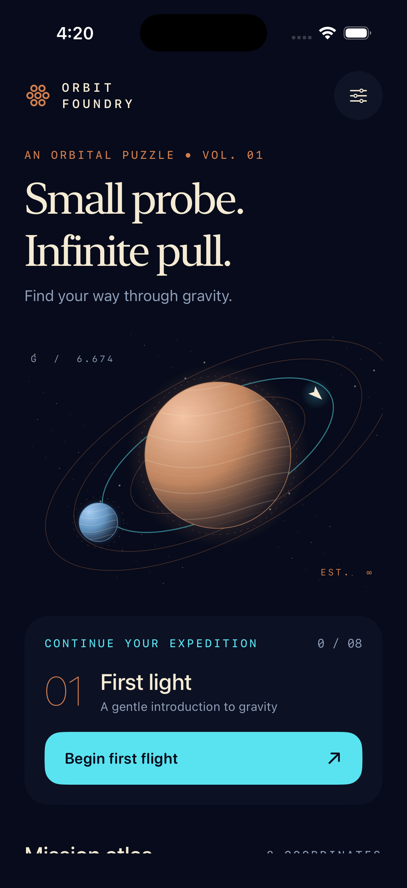

Orbit Foundry
Bend a probe’s path around luminous planets, collect beacons, and find a safe route home.
Build, tests & design review
Native environment
Native macOS 26.5.2 (25F84), arm64; Xcode 26.6 (17F113); iOS 26.5 Simulator. Final native UI tested on iPhone 17 Pro (691C57A7-98F5-4C32-A5AF-3074F4F0FBA3) at default and accessibility XXXL, and iPhone 17e (97EB512B-0C2B-41C5-BAA0-C9C96F1BCB9D) at default text and with Reduce Motion. Native SwiftUI/Observation/Canvas app targets iOS 17+, with committed Xcode project and shared scheme.
Checks
Final simulator Debug xcodebuild build passed with CODE_SIGNING_ALLOWED=NO. Strict xcrun swift-format lint --strict --recursive Sources Tests Tools and git diff --check passed. xcodebuild test on iPhone 17e passed 12 XCTest tests with zero failures: all eight complete mission solutions, prediction/live integration equality, softened gravity, 216 finite terminating angle/thrust cases, collision/missing-beacon failures, finished-flight stability, launch/reset/replay, aim/guide, best scores, progression and persistence/corrupt-save handling. Final native UI verified observatory/atlas/tutorial, held live ring drag, first-light docking/unlock, failure/review/retry, fresh replay scoring, leave and reset cancellation/confirmation, terminate/relaunch persistence, larger-text scrolling and guide dismissal, iPhone 17e layout, Reduce Motion Copper bend docking and inactive-scene pause smoke check. No repository CI checks were registered; no review findings or merge conflicts remained when checked.
Design iterations
Working V1: 459c1d7. Pass 1 (44792d4) fixed clipped guide/tutorial content, collapsed accessibility playfield, truncated controls, fragmented score labels, obscured failure paths, small targets/annotations and faint locked rows. Pass 2 (71e56d7) restricted aiming to a 72-point probe handle to preserve scrolling, clipped content below system safe areas, stacked the accessibility atlas heading/count, added Back to trajectory and persistent guide close, compacted the default guide sheet, added capture bursts with Reduce Motion fallback, paused inactive flight and reset replay scoring. Returned native screenshots were reviewed; the final tester confirmed the previous usability defects resolved.
Collection review
Collection review inspected the observatory, live aiming field and docking result. Copper planets, cyan telemetry, quiet star fields and ivory typography support a coherent orbital instrument. The 68.63-second video is native 1206 × 2622 H.264. Twelve XCTest cases verify deterministic solutions for all eight missions, prediction/live parity, bounds, finite physics, replay scoring and persistence. Native two-device testing and two concrete screenshot-informed design passes are documented. All 14 changed files are isolated to ios-collection/orbit-foundry/; Xcode project, shared scheme, icon and native tests are present. PR #95 is open with no actionable comments. Missions 03–08 were model-tested rather than manually completed; physical-device and spoken VoiceOver limitations remain explicit.
Revision
71e56d74ce3b07dae78e6bd675cf2041305c0fb9Limitations
- Portrait iPhone V1; no dedicated iPad/landscape layout, cloud sync or custom mission editor
- Spoken VoiceOver navigation and physical haptics/device performance remain untested; labels, standard sliders and Dynamic Type support are implemented
- Missions 01–02 were won through native UI; missions 03–08 have deterministic XCTest-verified solutions but were not manually played to completion
- Capture-particle suppression under Reduce Motion was not exhaustively inspected frame by frame; inactive-scene behavior received a timing smoke check rather than performance profiling
- Physics is a puzzle-scale model. Progress is local and removed on uninstall. The app and demo have no audio
- No physical-device validation, production signing, App Store approval or submission is claimed.